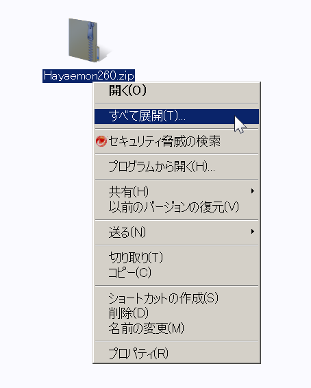
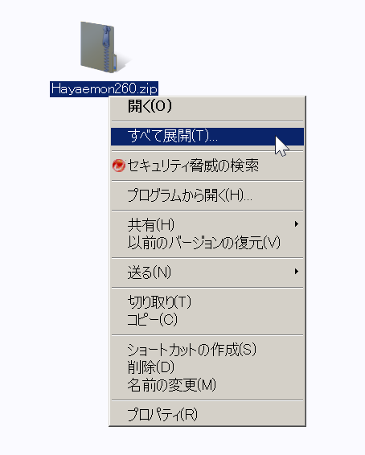
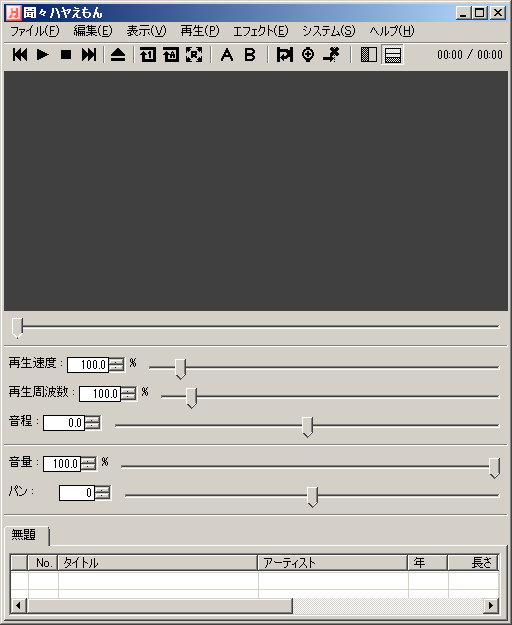
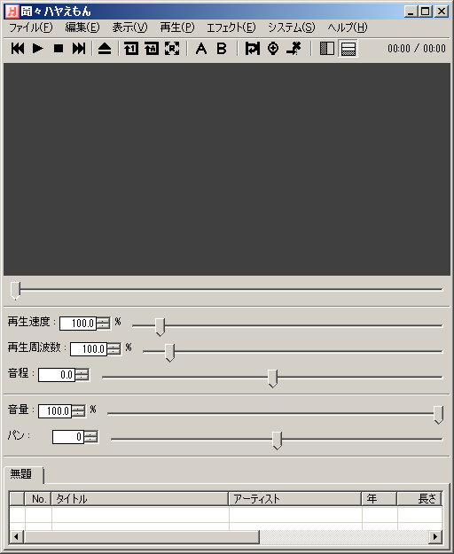

MP3プレイヤー フリーソフト
MP3プレイヤー フリーソフト聞々ハヤえもんを起動する方法
さあ、立ち上がるんだ。
このページでは、聞々ハヤえもんを起動する方法を説明します。
聞々ハヤえもんをご存知無い方は、まず以下のページをご覧ください。
聞々ハヤえもんについて
①ダウンロードしたファイルを解凍。
あなたがダウンロードした聞々ハヤえもんのファイルはZIPという形式で圧縮されています。
その為、まずはZIPファイルを解凍しましょう。
解凍は簡単で、右クリックメニューの「すべて展開」をクリックするだけです。
これでZIPファイルが解凍され、「Hayaemon2」というフォルダができるはずです。
その為、まずはZIPファイルを解凍しましょう。
解凍は簡単で、右クリックメニューの「すべて展開」をクリックするだけです。
▼右クリックメニューの「すべて展開」をクリック


これでZIPファイルが解凍され、「Hayaemon2」というフォルダができるはずです。
②「Hayaemon.exe」をダブルクリック。
ZIPファイルの解凍が終わったら、Hayemon2フォルダの中にある「Hayaemon.exe」をダブルクリックしましょう。
下記のような画面が表示されたら聞々ハヤえもんの起動は成功です。
下記のような画面が表示されたら聞々ハヤえもんの起動は成功です。
▼聞々ハヤえもん起動画面


聞々ハヤえもん公式サイト > 聞々ハヤえもんを起動する方法